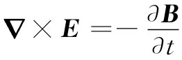

（33.11）
（33.11）首先，要向你们提起曾在第1卷第34章中采用过的描述平面正弦波的方便办法。波中任何场分量 （我们用E作为例子）可以写成如下形式：
（33.6）
其中E表示t时刻在（从原点算起的）点r处的波幅。矢量k指向波传播的方向，而它的大小|k|=k=2π/λ，即是波数。波的相速度为v相 =ω/k，对于折射率为n的材料中的光波，v相 =c/n，因而
（33.7）
假设k沿着z方向，那么，k·r就恰好是kz，正如我们经常用到的那样。对于在任何其他方向的k，应当用rk 来代替z，那是在k方向上从原点算起的距离，也就是说，应该用krk 代替kz，前者恰好是k·r（见图33-2）。因此，式（33.6）就是波在任何方向的简便表示式。
图33-2 沿k方向前进的波，在任一点P的相位为（ωt-k·r）
当然，还必须记得
k·r=kx x+ky y+kz z，
式中kx ，ky 和kz 是k沿三个坐标轴的分量。事实上，以前曾经指出过：（ω，kx ，ky ，kz ）是一个四维矢量，而它与（t，x，y，z）的标积则是一个不变量。因此，波的相位 是一个不变量，而式（33.6）可以写成
但是我们目前还不需要表示得那样漂亮。
对于一个如式（33.6）所示的那种正弦波形式的E来说，∂E/∂t等于iωE，而∂E/∂x等于-ikx E，其他各分量以此类推。你可以看出，为什么当与微分方程打交道时，运用式（33.6）那种形式会十分方便——微分都被乘法代替了。还有另一个有用之处：算符▽=（∂/∂x，∂/∂y，∂/∂z）被三个乘积（-ikx ，-iky ，-ikz ）所代替。但这三个因子却按矢量k的三个分量变换，因而算符▽就由-ik所代替了：
▽→-ik. （33.8）
这对于▽的任一种运算——不论是梯度、散度或旋度——都保持正确。例如，▽×E的z分量为
若Ey 和Ex 两者都按e-ik·r 变化，则由上式得
-ikx Ey +iky Ex ，
你明白这是-ik×E的z分量。
因此我们就得到非常有用的普遍事实，即每当你不得不对一个像三维波（这种波是物理学的一个重要部分）那样变化的矢量取梯度时，你始终可凭记住▽运算等价于乘上-ik，就能够迅速地并几乎不需思索地取得那些微商。
例如，法拉第方程

对于波变成
-ik×E=-iωB.
这告诉我们
（33.9）
上式相当于以前我们对自由空间里的波所求得的结果——波中的B既垂直于E，也垂直于波的传播方向（在自由空间中，ω/k=c）。你可以从k沿着坡印亭矢量S=∈0 c2 E×B的方向这个事实记住式（33.9）中的符号。
如果你对其他麦克斯韦方程也运用同样的规则，你就会重新获得上一章中的那些结果，而特别是
（33.10）
但既然我们已经知道了那些结果，就无需再去做它了。
如果你想要自己寻点乐趣，可以尝试下述的可怕问题，回到1890年代那时研究生的毕业试题：当极化强度P与电场E由一极化率张量相联系时，试解出麦克斯韦方程组以求出各向异性晶体中的平面波。当然，你应该选取你的坐标轴使其沿该张量的主轴，以致关系最为简单（这样Px =αa Ex ，Py =αb Ey 和Pz =αc Ez ），但允许波有任意的方向和任意的偏振。你应能够求出E与B之间的关系以及k怎样随着方向和波的偏振而变化，那么你将理解一块各向异性晶体的光学性质。最好是先从双折射晶体——像方解石——那种较简单的情况开始，其中两个极化率相等（比方说αb =αc ），并看看你是否能理解为什么当你通过这样的晶体观察时会得到双像。如果你已能够理解这些问题，那么便可尝试那最困难的情况，即三个α都不相同的那种情况。这样，你就会明白你是否已达到1890年代研究生的水平。然而，在本章中，我们只希望讨论各向同性物质。
我们从实验上得知，当一平面波到达两种不同材料——比如说，空气和玻璃，或水和油——之间的界面上时，就有一个反射波和一个透射波。假设我们除此之外不再假定有其他任何东西了，并看看能否算出些什么。首先，选取坐标轴使得yz面就是该界面，而xy面垂直于那些入射波面，如图33-3所示。
图33-3 关于入射、反射和透射波的传播矢量k，k′和k″
于是入射波的电矢量就可以写成
（33.11）
既然k垂直于z轴，因此
k·r=kx x+ky y. （33.12）
可以把反射波写成
（33.13）
以致它的频率为ω′，波数为k′，而波幅为 （当然我们知道，频率以及k′的大小分别与入射波的相同，但甚至对此也不打算做假定。我们将让它出自数学设计）。最后，对于透射波还可以写出
（33.14）
我们知道，麦克斯韦方程组中的一个方程会给出式（33.9），因而对于每个波就有
并且，如果把那两种媒质的折射率叫作n1 和n2 ，则由式（33.10）可得
（33.16）
由于反射波是在同一种材料中的，因此
（33.17）
而对于透射波则为
（33.18）